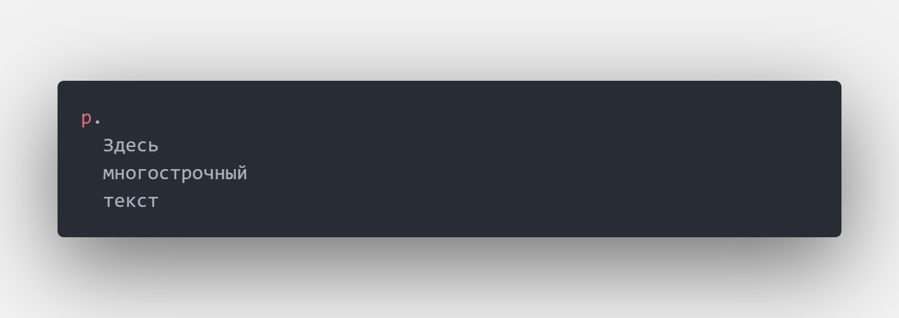

Препроцессор Pug
Использование плагина компилятора - Live Pug Compiler.
Устанавливаем плагин в редактор VS Code, открываем поиск сочетанием клавиш - CTRL+SHIFT+P и выбираем пункт Start Pug Compiler.
Синтаксис
Атрибуты пишутся в скобках сразу после тега.
Многострочный текст можно написать следующим способом.
Переменные
Переменная в атрибут вставляется без каких-либо конструкций и кавычек.
Переменная в тег вставляется при помощи интерполяции текста.
Инклюды
Позволяют встраивать части кода и при необходимости редактировать только сам шаблон в 1 месте, чтобы изменения появились на всех страницах куда подключен шаблон. Точнее сказать include это не совсем шаблон, это просто банальная вставка кода.
Если подключаем файл *.pug то расширение можно не дописывать.
Block, extends
Этот метод позволяет наследовать шаблон внутри файлов pug, его можно подключить ко всем страницам. Директиву block content мы можем наследовать во всех файлах, куда подключен шаблон и изменять в тех местах, где это нужно. Из файла шаблона наследуются все блоки, которые в нём есть, отменить наследование нельзя, можно только изменить.
Как переопределить переменную для заголовка?
Нужно просто обернуть переменные в шаблоне в блок, чтобы потом сам блок можно было наследовать в нужном файле и изменять (переопределять переменные).
Циклы
Циклы полезны тогда, когда нужно удобно менять содержимое каких-то блоков, например блока меню.
Цикл для создания меню
Миксины
Миксины не являются отдельными файлами шаблонами, это мини-шаблоны внутри конечного файла.